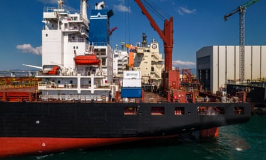
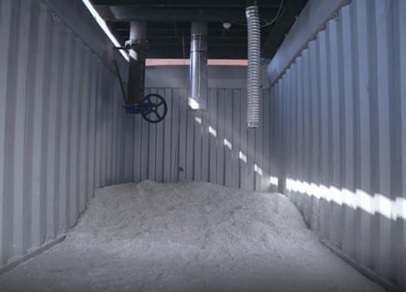

A n industrial park alongside the River Lea in the London suburb of Chingford might not be the most obvious place for a quiet revolution to be taking place. But there, a team of entrepreneurs is tinkering with a modest looking steel container that could hold a solution to one of the world’s dirtiest industries.
Inside it are thousands of cherry-sized pellets made from quicklime. At one end, a diesel generator pipes fumes through the lime, which soaks up the carbon, triggering a chemical reaction that transforms it into limestone.
With this invention, Seabound, the company behind it , hopes to capture large amounts of carbon directly from the decks of cargo ships, and help clean up this strikingly polluting industry. More than 50,000 cargo ships are at sea at any moment, producing 3% of global greenhouse gas emissions – more than aviation .

Seabound co-founders are chief executive Alisha Fredriksson (left) and chief technology officer Rojia Wen.Photograph: Seabound
Behind all this is Alisha Fredriksson, a young entrepreneur who once dreamed of being a doctor but reached a turning point in her career after reading a report from the Intergovernmental Panel on Climate Change that detailed the global implications of 1.5C (2.7F) v 2C (3.6F) of warming.
“That’s when I realised that everyone around the world will be affected by the climate crisis, and so if I cared about large-scale social impact, the best thing I could do would be to help tackle it,” says 30-year-old Fredriksson, chief executive of Seabound. “Then the question became ‘well, how?’”
Trials have shown that her invention can scrub most of the carbon from the ship exhaust, filtered through its lime-pebbled interior. Ultimately, the goal is to have this device strapped to ships across the world’s oceans, she says.
After identifying the problem she wanted to solve, the real work began. She and her co-founder, Roujia Wen, hit on the idea of scaling down the existing quicklime-based carbon-capture technology typically employed at industrial plants.
They then made a prototype, and attracted about $4m (£3m) in funding from investors. Some of this came from shipping companies. “It all happened really quickly. Suddenly we had money, and we had to go build it,” says Fredriksson. “I think people were ready for a solution.”
Since then, successive prototypes of the Seabound container have taken her from the company’s test-bed in east London, to Turkish shipyards, the deck of a 3,200-container ship, and down the Suez canal on a three-week voyage to test its efficiency. This showed that a Seabound unit can capture 78% of all the carbon from the exhaust that is pumped through it, and 90% of the sulphur, a toxic air pollutant.
The latest prototype is being built to the dimensions of a standard 20ft (5.9 metre) shipping container, so that it can seamlessly slot in with cargoes on deck, Fredriksson says. The design allows the stacking of several containers like regular cargo, and enables the ship to incrementally increase carbon capture in line with its journey length and decarbonisation goals.
A carbon capture unit being installed on a tankerPhotograph: Seabound
Once in port, the limestone-filled units can be substituted for containers of fresh quicklime. This product is made by heating limestone to high temperatures in kilns, an energy-intensive process that also releases CO2 from the limestone, making production extremely carbon-intensive.
Companies are trying to make quicklime using kilns heated with renewable energy, or developing methods to capture the released CO2 so that it doesn’t enter the atmosphere. Seabound is working to source this “green” quicklime, Fredriksson says. “There isn’t currently a large quantity of green lime available globally, however there are many companies in the lime industry that are working on producing this – both large incumbents and various startups.”
Some critics are concerned that decarbonising technologies could distract from solutions, such as zero-emission ammonia fuel or wind-powered innovations, that are essential to push the shipping industry to net zero.
“The potential for short-term use of carbon-capture retrofits on existing vessels should not become a justification to extend the lifespan of fossil fuels or delay the shift to truly sustainable alternatives,” says Blánaid Sheeran, climate diplomacy policy officer at Opportunity Green , a nonprofit organisation focused on gaps in global climate policy.
But Fredriksson believes Seabound’s technology could support this transition. In April, at a meeting of the International Maritime Organization, UN member states agreed to a landmark deal that will start charging ships for every ton of emissions above a threshold. That threshold will gradually decrease to push the industry towards green fuels.
Thousands of cherry-sized quicklime pellets soak up 78% of the carbon and 90% of the sulphur in exhaust fumes pumped through them.Photograph: Seabound
Seabound slots into this new regulatory landscape, according to Fredriksson, by enabling ships to decarbonise their fuels, thereby lowering their emissions, and gradually adjust to the rules by adding more containers over time.
“We can grow the amount of carbon capture as the regulations ramp up,” she says, noting that the invention can start cleaning up ships now as green fuels filter through the industry.
Like most startups, Seabound faces the challenges of scaling up. But with each unit priced in the tens of thousands of pounds, Fredriksson says their offering is cost-effective.and she has already has a commitment from one company to fit the first full-scale containers on to its ships this year.
Her vision for the future is clear: “It would be that we’re on hundreds to, hopefully, thousands of ships, and we’ve got hubs in all the major ports around the world,” she says.